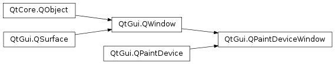

QPaintDeviceWindow¶
Inherited by: QRasterWindow, QOpenGLWindow
Synopsis¶
Virtual functions¶
- def
paintEvent(event)
Detailed Description¶
Convenience subclass of
PySide2.QtGui.QWindowthat is also aPySide2.QtGui.QPaintDevice.
PySide2.QtGui.QPaintDeviceWindowis like a regularPySide2.QtGui.QWindow, with the added functionality of being a paint device too. Whenever the content needs to be updated, the virtualPySide2.QtGui.QPaintDeviceWindow.paintEvent()function is called. Subclasses, that reimplement this function, can then simply open aPySide2.QtGui.QPainteron the window.Note
This class cannot directly be used in applications. It rather serves as a base for subclasses like
PySide2.QtGui.QOpenGLWindow.See also
-
PySide2.QtGui.QPaintDeviceWindow.paintEvent(event)¶ Parameters: event – PySide2.QtGui.QPaintEventHandles paint events passed in the
eventparameter.The default implementation does nothing. Reimplement this function to perform painting. If necessary, the dirty area is retrievable from the
event.
-
PySide2.QtGui.QPaintDeviceWindow.update(region)¶ Parameters: region – PySide2.QtGui.QRegionMarks the
regionof the window as dirty and schedules a repaint.Note
Subsequent calls to this function before the next paint event will get ignored, but
regionis added to the region to update.Note
For non-exposed windows the update is deferred until the window becomes exposed again.
-
PySide2.QtGui.QPaintDeviceWindow.update() Marks the entire window as dirty and schedules a repaint.
Note
Subsequent calls to this function before the next paint event will get ignored.
Note
For non-exposed windows the update is deferred until the window becomes exposed again.
-
PySide2.QtGui.QPaintDeviceWindow.update(rect) Parameters: rect – PySide2.QtCore.QRectMarks the
rectof the window as dirty and schedules a repaint.Note
Subsequent calls to this function before the next paint event will get ignored, but
rectis added to the region to update.Note
For non-exposed windows the update is deferred until the window becomes exposed again.
© 2018 The Qt Company Ltd. Documentation contributions included herein are the copyrights of their respective owners. The documentation provided herein is licensed under the terms of the GNU Free Documentation License version 1.3 as published by the Free Software Foundation. Qt and respective logos are trademarks of The Qt Company Ltd. in Finland and/or other countries worldwide. All other trademarks are property of their respective owners.